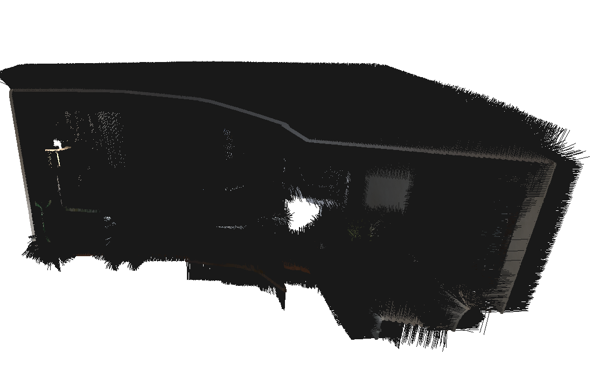

3D Reconstruction with RGBD Data
Author: Kelvin Kang
This project aims to fuse several frames of RGBD data into a dense 3D Reconstruction
Using Iterative Closest Point (ICP), we register pointclouds between two consecutive frames to calculate camera movement between frames. We then use Factor Graph to perform SLAM to fuse the individual visual odometry factors into a global solution.

Since we are performing this construction using only RGBD data, we first need to calculate the transformation matrix T of the camera pose between consectutive frames. This is done using the point cloud data from the depth map that the RGBD sensor provides. ICP is a common algorithm used to register two pointclouds. Below is animation that shows a sample of ICP running.

ICP involves finding the closest source point for each target point, which is an expensive operation. To speed up this process, Projective Closest Point is used. Each source point is projected to the image space, i.e. the RGBD camera frame using projection operation, and finding the closest pixel point that it lands on in the image space. The corresponding target point of that pixel is the reprojected back to the 3D space and its Eucledian distance is calculated to the source point. If the values are larger than a certain threshold, the association is discarded, this prevents erroneous correspndonces since Projective Closest Point might not provide the exact closest point. Therefore, the operation is done is O(n) time, instead of O(nlogn). This method only works because the pointclouds data from RGBD is structured, i.e. each 3D point can be traced back to a 2D image pixel that it originates from.
Image below shows the before (left) and after (right) registration of two pointclouds from different frames. The right fused frame is able to register the pointclouds with good overlap.
To stress-test the registration algorithm, two pointclouds from two different frames that are far apart is registered. As seen there are less overlap and greater camera movement but the algorithm is still able to register the two clouds well.
To minimize the point-to-plane error between associated source and target points (\(p, q\)). The error function to minimize is:
\[ \sum_{i\in\Omega} \| n^T_{q_i}(Rp_i+t-q_i) \|^2\]
Where (\(p_i, q_i\)) is the \(i\)-th associated point pair in the association set \Omega and \(n_{q_i}\) is the estimated normal at \(q_i\). A small angle assumption between two consecutive frames is made, hence the rotation matrix \(R\) is parameterized as:
\(\delta R = \begin{bmatrix} 1 & -\gamma & \beta\\ \gamma & 1 & -\alpha\\ -\beta & \alpha & 1 \end{bmatrix}\)
For the translation component, we define \(\delta t = \begin{bmatrix} t_x & t_y & t_z \end{bmatrix}\)
Therefore, the error function can be redefined with \(p^\prime_i = Rp_i + t\)
\[ \sum_{i\in\Omega}r^2_i = \| n^T_{q_i}((\delta R)p^\prime_i+\delta t-q_i) \|^2\]
To solve this SLAM we first create a linear system of equation to solve it with least squares in the form of \(Ax=b\)
\(r_i(\alpha,\beta,\gamma,t_x,t_y,t_z) = A_i\begin{bmatrix}\alpha \\ \beta \\ \gamma \\ t_x \\ t_y \\ t_z\end{bmatrix} + b_i\)
\(A_i = \begin{bmatrix}p^\prime_i \times n_{q_i} & n^T_{q_i} \end{bmatrix}\)
\(b_i = \begin{bmatrix}n^T_{q_i}(p^\prime_i - q_i) \end{bmatrix}\)
The linear system of equations is sparse, which can be exploited to speed up computation using QR factorization
Below are the final reconstructed result combining ICP and SLAM, the black arrows are the normal of each point.
